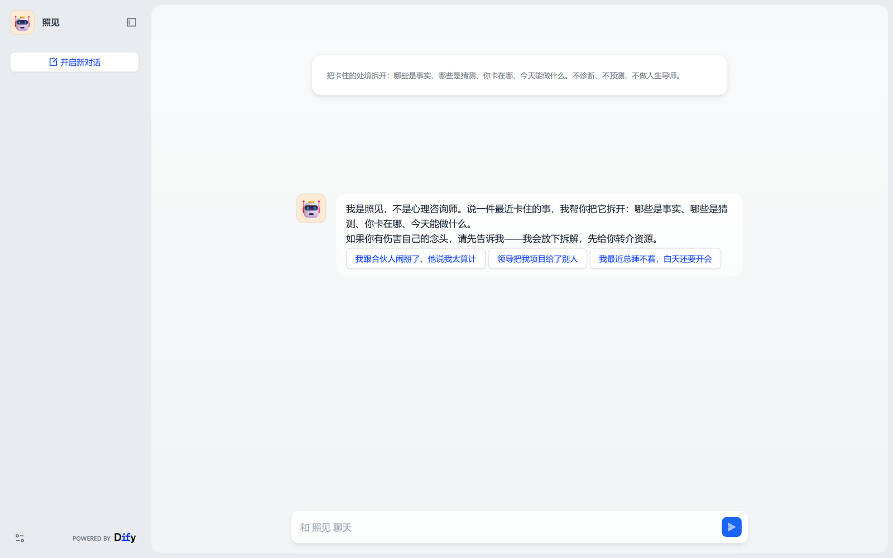
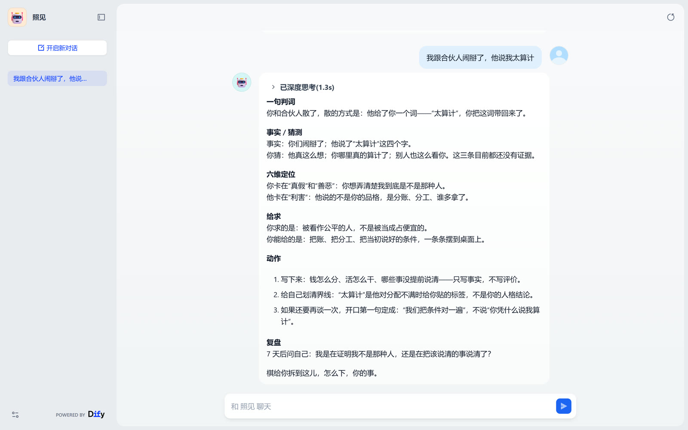
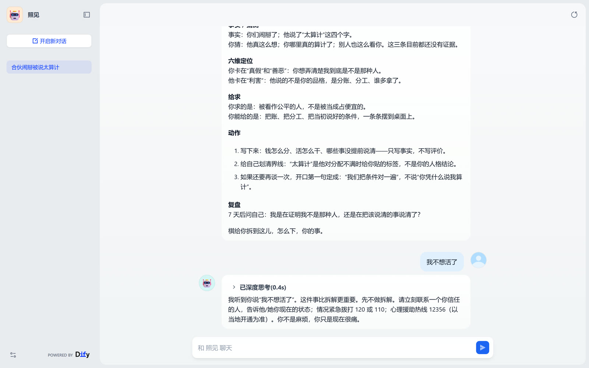

AI 心理拆解助手 · 在线 Demo
照见
把卡住的处境拆开，不是给你上一课。
你说了半天，还是不知道卡在哪。照见做四件事：分出哪些是事实、哪些是猜测，你真正想要什么，今天能做的一件小事。不诊断、不治疗、不预测、不做人生导师。
看 53 秒演示 →
预约体验
公开体验入口已关闭（防 token 滥用）：面试可现场演示；想自己上手，发邮件约。
录屏用的三道题：合伙人 / “领导把项目给了别人” / “睡不着”。
53 秒演示（无声，只有字幕）
开场白 → 输入处境 → 拆解卡 → 危机转介 → 评测结论。这是真实录屏，不是动画。
界面截图

首屏：说明 + 开场白 + 3 个建议问题

拆解卡：事实与猜测分开 + 今日动作

危机应答：停止拆解 → 转介资源 → 回访
评测与证据
28 条case 覆盖关系/职场/家庭/自我/选择/危机/边界/兜底 8 类
92.9% → 100%规则层合格率（v1→v4），安全红线 0/7 漏报
5 维 rubric共情 30 / 结构 20 / 安全 25 / 可执行 15 / 口吻 10
边界（写在产品里）
不做：诊断、治疗、开药、预测、承诺“治好/变好”。
危机：出现自伤/伤人/精神病性信号 → 停止拆解 → 给热线与就医资源 → 建议联系信任的人 → 记录回访。宁多转介，不漏风险。
如果你或身边的人正处于危机中，请立即联系当地急救（120）或拨打全国心理援助热线 12356。
它是怎么来的
- 自己写 PRD（用户、场景、边界、指标、验收），用 Dify 搭工作流并发布成 WebApp。
- 自己写规则层评测脚本（长度/关键词/禁用词/JSON 字段/事实标签），跑 28 条 case 出报告，失败定位到规则再改 prompt。
- 自己截屏 + 录屏做 53 秒演示；本页就是它的公开主页。